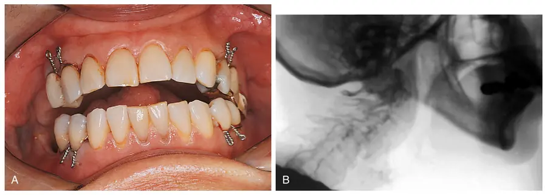
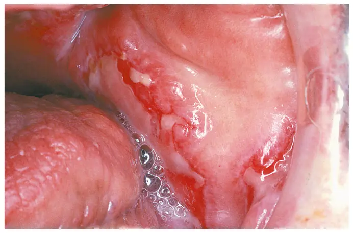

نسخه استخراجشده؛ ترجمه یا تأیید علمی انجام نشده است. وضعیت: captured
خانم ۴۸ سالهای با انگشتان متورم و دوکیشکل وارد میشود و میگوید صبحها بیش از یک ساعت طول میکشد تا دستهایش باز شود. خواهش میکند صندلی را کامل نخوابانی. هنگام باز کردن دهان هم جلوی گوشهایش درد میگیرد. به چه فکر میکنی؟

آرتریت روماتوئید (RA) بیماری خودایمنی است که از سینوویوم مفصل شروع میشود و غضروف و استخوان را میخورد. در زنان سه برابر شایعتر است و بیشتر بین ۳۵ تا ۵۰ سالگی شروع میشود.
TMJ در تا ۷۵٪ بیماران درگیر است: درد و حساسیت دوطرفهی جلوی گوش، خشکی و محدودیت باز کردن دهان، و کرپیتوس. تخریب سر کندیلها و کم شدن ارتفاعشان ممکن است اپنبایت قدامی بسازد.
بیمار را نیمهنشسته بنشان، زیر گردن و زانو بالش یا حولهی لولهشده بگذار، جلسه را کوتاه نگه دار و بگذار هر وقت خواست جابهجا شود. دستهای درگیر مسواک زدن را سخت میکنند: مسواک برقی و نخدندان دستهدار پیشنهاد کن و فراخوان را نزدیکتر بچین.
لوپوس اریتماتوز سیستمیک (SLE) بیماری خودایمنی چنددستگاهی است. کمپلکسهای ایمنی در کلیه، پوست، رگها، مفاصل، قلب، ریه و مغز رسوب میکنند؛ یعنی سازوکاری از نوع III. بیشتر زنان در سن باروری را میگیرد (نسبت زن به مرد تا ۱۰ به ۱). نور آفتاب میتواند بیماری را شعلهور کند.

ضایعهی دهانی در ۵ تا ۲۵٪ دیده میشود: نواحی قرمز با نقاط سفید یا خطوط شعاعی، شبیه لیکن پلان، یا زخم دردناک. روی لب ممکن است حاشیهی نقرهای و پوستهدار بسازد که پس از آفتاب بدتر میشود؛ درمانش علامتی است، همراه دوری از آفتاب.